EzRemove `watermark remove` 增长研究：ZaneWynn_SEO 遗产内容完整拆解
目标站点：https://ezremove.ai/ 目标词：
watermark remove输出日期：2026-06-08
这批内容真正有价值的不是“某个 SEO 技巧”，而是一套从认知、选词、内容、外链、社媒冷启动、代理数据判断到商业化承接的增长系统：
- 认知层：赚钱/创业不是考试，要理解规则、激励和风险收益。
- SEO 层：选词决定入口，长尾负责铺量，内链负责传权，外链负责外部信任。
- 社媒层：推荐流不是搜索流，首图、标题、人设和需求创造更重要。
- 商业层：产品到及格线后，流量和营销决定上限；但产品不能低于承接流量的底线。
- 数据层：没有完美数据时，用 Semrush、GSC、Google Trends、竞品、社媒评论、平台销量做代理验证。
道法术器势总拆解
一句话结论：这套内容不是单纯的 SEO
技巧集合，而是一套“用真实需求制造品牌搜索，再用搜索和产品页承接转化”的增长系统。对
EzRemove 来说，watermark remove
只是入口，真正要经营的是图片/视频素材处理工作流。
| 层级 | 核心问题 | 从文档里抽出的判断 | 对 EzRemove 的落地 |
|---|---|---|---|
| 道 | 为什么做，边界在哪里 | 增长不能只按平台教程做题，要理解用户、平台和商业系统的激励；但不能把侵权、虚假搜索、低质内容农场当成增长。 | 以“帮助用户处理自己有权使用的素材”为价值边界；所有页面都要说明版权、授权、商用风险，品牌不能被做成灰色工具。 |
| 法 | 用什么系统持续增长 | 先用免费工具和社媒/KOL 创造需求，再用 SEO/GEO 页面承接需求；先打低难度长尾和场景词，再把权重导向核心词。 | 建立“核心工具页 + 长尾教程页 + 对比页 + FAQ/GEO 页 + KOL/PR 内容”的内容系统，不做一次性刷词活动。 |
| 术 | 每天具体做什么 | 选词、页面、内链、外链、KOL、评论挖掘、首图标题、竞品词、FAQ，全部要绑定页面角色和转化指标。 | 重点执行 watermark remover
核心页、图片/视频长尾页、竞品替代页、版权安全 FAQ、前后对比素材、KOL
brief 和 UTM 追踪。 |
| 器 | 用什么工具和资产沉淀 | Semrush、GSC、Trends、GA4、UTM、X/Twitter 评论、飞书文档、页面模板、图片案例库、raw 抓取数据。 | 每周用数据复盘“词、页、渠道、转化”；把评论问题转成 FAQ，把高表现素材转成页面和 KOL 模板。 |
| 势 | 借什么趋势放大 | AI 图片/视频编辑、电商素材处理、短视频素材复用、免费工具冷启动、品牌搜索和 GEO/LLM 搜索推荐。 | 不把 EzRemove 定位成单点去水印，而是定位成 AI 素材清理和创作者工作流入口。 |
道：先定价值边界，不然流量会反噬品牌
这批内容里反复出现“规则、风险收益、平台机制、用户停留”的判断。真正可复用的不是灰色技巧，而是：增长动作必须理解规则，也必须知道哪些边界不能碰。
- 用户价值：帮助用户更快处理自己有授权、可使用、可二次编辑的图片/视频素材。
- 风险边界：不鼓励盗图、搬运、侵权商用，不用虚假搜索、机器人点击、站群伪装去做短期排名。
- 产品底线：上传、处理、预览、下载、注册、付费这些流程必须稳定，否则越投流量越容易放大负反馈。
- 品牌目标：让用户因为真实体验主动搜索 EzRemove，而不是靠人为刷搜索制造假信号。
法：先造需求，再承接搜索，再沉淀品牌
文档里的核心方法可以压成一条路径：
免费工具体验 -> KOL/社媒制造场景需求 -> 用户搜索品牌/问题词 -> SEO/GEO 页面承接 -> 工具转化 -> 数据反哺选词和内容
这条路径里有三个关键顺序：
- 冷启动时不要只盯大词。先做能排得动的长尾、场景词和问题词。
- 社媒和 KOL 不是为了直接讲 SEO 标题，而是为了展示“处理前后对比”和“工作流节省时间”。
- SEO 页面不是孤立文章，每篇都要把权重、流量和用户带回核心工具页。
术：执行动作要按页面角色分工
| 页面/动作 | 负责什么 | 内容要点 | 验收指标 |
|---|---|---|---|
| 核心工具页 | 承接核心词和转化 | watermark remover、上传入口、前后对比、免费额度、隐私和版权说明 |
上传率、处理成功率、下载率、注册率、付费率 |
| 长尾教程页 | 拿低难度搜索入口 | remove watermark from image/video、remove logo、remove text、remove date stamp | impression、排名、点击、内链点击 |
| 竞品/替代页 | 承接比较意图 | EzRemove vs 竞品，免费额度、输出质量、速度、价格、隐私 | 停留、上传、跳转工具页 |
| FAQ/GEO 页 | 让搜索引擎和 LLM 更容易引用 | What is EzRemove、Is it legal、How it works、Best use cases | 收录、引用、品牌词曝光 |
| KOL/PR 内容 | 创造需求和品牌搜索 | 前后对比、真实素材处理流程、创作者/电商/剪辑师场景 | 品牌搜索、UTM 访问、上传、注册 |
| 外链合作 | 引入垂直信任 | AI 工具目录、图片编辑教程、视频剪辑资源、电商卖家工具合集 | 来源质量、停留、上传、辅助转化 |
器：工具不是摆设，必须进入周复盘
| 工具/资产 | 看什么 | 产出什么 |
|---|---|---|
| Semrush | 搜索量、KD、竞品页面、外链来源 | 关键词池、竞品页清单、外链候选 |
| Google Search Console | impression、query、页面点击、索引状态 | 长尾扩页、标题调整、内链优化 |
| Google Trends | 需求是否上升 | 抢上升词，而不是只追最大词 |
| GA4 + UTM | KOL/外链/页面的真实转化 | 渠道 ROI、KOL 白名单、淘汰名单 |
| X/Twitter 评论与引用 | 真实疑问和反驳 | FAQ、选题、案例、内容补洞 |
| 飞书知识库 | 方法论和执行复盘 | 可复用 SOP、页面模板、KOL brief、周报 |
| 图片/视频案例库 | 处理前后效果 | 页面素材、社媒素材、广告素材 |
势：watermark remove
要吃的是素材工作流趋势
单看
watermark remove，它只是一个工具词；放到趋势里，它背后是几类长期需求：
- AI 图片和视频生成变多，用户需要二次清理、裁剪、修复、去文字、去 logo。
- 电商卖家需要更快处理商品图、素材图、海报图。
- 短视频创作者需要复用素材、清理画面、提高剪辑效率。
- 免费工具更容易冷启动，但稳定后要逐步限制滥用并设计商业化路径。
- GEO/LLM 搜索会偏好结构清晰、FAQ 完整、边界明确、案例充分的页面。
最终落地优先级
- 先把核心工具页做到能承接流量：上传、处理、下载、注册、版权边界。
- 做 20-40 个长尾教程和 FAQ/GEO 页面，把问题词和场景词铺起来。
- 用 KOL/PR 做真实前后对比，带动 EzRemove 品牌搜索，不做虚假搜索。
- 建立内链系统，让长尾页和对比页持续给核心工具页传权。
- 每周用 GSC、GA4、UTM、Semrush 复盘，留下有效词、有效页、有效 KOL、有效外链。
- 起量后再商业化：免费额度、批量处理、高清导出、视频处理、团队/电商套餐。
评论/引用总洞察
本次原始数据里可明确拆出的互动包括评论/回复 13 条、引用 8 条；页面级引用对象里既有非作者引用，也有作者用来承接下一篇的系列引用。评论区传递出的重点不是“大家觉得有用”这种泛反馈，而是很具体的执行缺口：
| 评论信号 | 说明 | 对 EzRemove 的落地动作 |
|---|---|---|
| 问流程图和工具 | 用户不只要观点，还想复用图、表、流程 | 把 SEO/PR/GEO 方法做成可下载模板、检查表、工作流图 |
| 问权重传递和外链 | 抽象 SEO 概念需要翻译成操作步骤 | 做内链/外链/长尾页的执行手册，配真实页面结构示例 |
| 问商业模式 | 用户关心流量如何变现，不满足于排名解释 | 每个流量打法都补上转化路径：访问、上传、下载、注册、付费 |
| 问冷启动后怎么做 | 选词只是起点，读者需要从 0 到 1 的硬启动清单 | 为 watermark remove 做 30/60/90 天页面、KOL、外链、GSC
迭代计划 |
| 质疑低质 SEO | 有人把关键词打法等同内容农场 | EzRemove 页面必须有真实工具入口、前后对比、限制说明和版权边界 |
| 问无流量外链是否有用 | 用户能识别“链接数”和“有效用户”的区别 | 外链验收从 DA/数量转向垂直相关、停留、上传、导出和辅助转化 |
| 请求长文展开 | X 线程有学习价值，但不适合作为最终知识库 | 把线程整理成飞书文档、GitHub 研究页、FAQ 和执行清单 |
对 EzRemove 来说，不能只发布一堆围绕 watermark remove
的文章；要把文章、工具入口、案例图、模板、FAQ、KOL
内容和转化数据连成一个系统。
人生观
- 来源：https://x.com/ZaneWynn_SEO/status/1857705646172631354
- 主题：赚钱认知：从“好学生规则”切换到“资源竞争、风险收益、利用规则”的创业视角。
全文结构拆解
- 用大学生关心荣誉是否影响就业的故事开场，把话题从校园评价体系转到真实赚钱体系。
- 重新定义赚钱：不是把时间卖出去，而是利用认知差、信息差、规则差创造非线性收益。
- 提出两个要摒弃的心智：道德洁癖和好学生思维；强调不是无底线，而是要理解资源有限、规则可被利用。
- 用炒鞋和酒店协议价案例说明：机会往往伴随规则边界和账号/声誉风险，关键是计算风险收益比。
可复用原则
做增长的人不能只按平台明面规则考试，要理解用户、平台和商业系统的激励结构；
但每个越界动作都必须计算风险，不把风险外包给用户或品牌。
映射到 EzRemove
- EzRemove 的 PR 可以借这个思路做“普通用户如何用 AI 工具降低素材处理成本”的认知差内容，而不是只讲功能。
- 所有灰色使用场景必须加边界说明，例如版权、授权、个人素材、商用风险，避免把品牌做成侵权工具。
- 把免费工具包装成效率杠杆：用更低时间成本完成图片/视频素材处理，而不是鼓励违规搬运。
SEO技巧分享第0篇
- 来源：https://x.com/ZaneWynn_SEO/status/1858800927282729363
- 主题：SEO 第 0 篇：选词是流量分配的起点，核心词承接权重，非核心词负责铺量和传权。
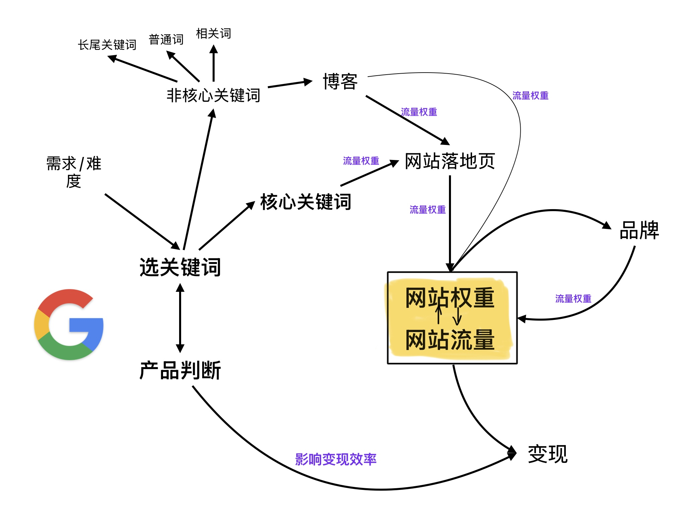
全文结构拆解
- 先把 SEO 流程抽象成选词、内容、内链、外链、权重传递，再强调选词是最前置动作。
- 回应“产品第一还是流量第一”：产品影响变现效率，但多数场景先要拿到可见流量。
- 把关键词分成核心词与非核心词；核心词放首页/功能页，非核心词放博客/长尾页。
- 最终目标不是文章本身，而是通过非核心页面把流量和权重导向核心产品页，形成品牌反哺。
评论与引用洞察
| 类型 | 链接 | 互动 | 内容要点 | 这一层的作用 | 可复用动作 |
|---|---|---|---|---|---|
| 评论 | 1859483186100912378 | likes 0 views 214 |
读者质疑做词容易变成低质内容农场。 | 提供反面约束，提醒关键词策略不能只堆页面。 | EzRemove 的 SEO 页必须有真实工具、示例、限制说明和版权边界。 |
| 评论 | 1858911845232636291 | likes 1 views 433 |
读者给出正向学习反馈。 | 证明基础向 SEO 内容有受众。 | 把系列整理成知识库，而不是只留在 X 线程里。 |
| 评论 | 1858918866036158537 | likes 0 views 463 |
读者追问流程图用什么工具做。 | 说明图表和流程资产本身能引发互动。 | 提供可复用图表模板，带动收藏、分享和品牌搜索。 |
| 评论 | 1859114539897549227 | likes 0 views 314 |
读者想学习权重传递的参考资料。 | 暴露执行层缺口：概念知道了，但不知道怎么系统学。 | 新增内链、外链、权重传递的教程页和检查清单。 |
| 引用 | 1858912156869423157 | likes 3 views 2445 |
外部引用表达希望继续看更多 SEO 分享。 | 验证系列化内容有延展空间。 | 按专题连续发，而不是一次性发布单篇。 |
| 引用 | 1859131744110481458 | likes 47 views 19808 |
关联回第 1 篇，说明竞品品牌词仍属于选词体系的一部分。 | 维持系列知识结构。 | 在文档中把所有战术归回关键词分层。 |
| 引用 | 1861708834051670418 | likes 112 views 22765 |
引用扩展到工具篇：Semrush、Google Trends、MozBar 分别看量、趋势、难度。 | 补齐选词工具层。 | 建立每周关键词看板，用搜索量、KD、趋势和 GSC impression 共同决策。 |
可复用原则
SEO 内容不是孤立文章，而是一套权重管道；每篇内容都要知道自己在给哪个核心页面输血。
映射到 EzRemove
/watermark-remover/承接核心词组：watermark remover、watermark remove、remove watermark。- 博客集群承接长尾：remove watermark from image/video、remove logo、remove text、batch watermark remover。
- 每篇长尾文都必须有明确内链回主工具页，形成“长尾入口 -> 工具体验 -> 注册/付费”的路径。
SEO技巧分享第1篇
- 来源：https://x.com/ZaneWynn_SEO/status/1859131744110481458
- 主题：SEO 第 1 篇：新站选词要选易不选难，用相关词和长尾词完成冷启动。
配图/媒体归档
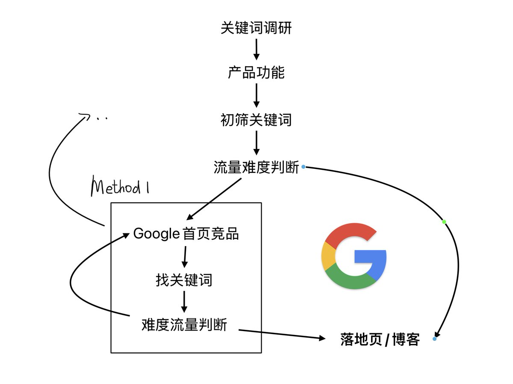
SEO怎么才能选好词 用一个简单的例子来切入 我们的产品：http://Decopy.ai 主要是用来检测和优化AI生成的内容 如果从零到一开始去做SEO 选词大家可能会去选ai detector / ai checker / ai tester （这些流量大又垂直的词） 但是这些词无一例外 都有个特点：难度过大 semrush的难度基本都是90%以上 这就引出了一个选词原则：选易不选难 不是说难度高的词就不能选 这要看你愿意投入多少时间精力在这上面 （还有运营团队的水平和经验，以及收益评估） 如果是刚开始做SEO 建议选词还是要“选易不选难” 关键词难度过大，可以先从长尾关键词做起 或者是寻找相关词替代 比如Decopy的关键词，我们完全可以换一个思路 打 "AI humanizer" 这个词，难度只有50%左右 长尾词再选一些流量不高，但是非常简单的 例如 "can ai be detected in a powerpoint" 等等 排名迅速打上去，也就能用SEO更好的辅助网站冷启动 做SEO一定不要眼高手低 认为流量低的词就没有价值 其实完全不是，之前聊过谷歌流量分发逻辑是赢者通吃 难的词打不上去，流量和没有是一样的，完全没有意义 找关键词的其中一种方法可以参考一下上面的图 细节很多，这个方法不是万能的，大家随时变通 之后会分享一下我平时找关键词用的哪些工具 以及我是如何综合衡量判断关键词流量和难度的
全文结构拆解
- 用 Decopy 的 AI detector 例子说明：大词垂直但难度过高，新站直接打等于没有流量。
- 提出选词原则：流量大不是价值，能进排名才有价值；难词可以长期做，但冷启动要先找易词。
- 把核心词换成相关替代词，如 AI humanizer，再用具体问题型长尾词快速拿排名。
- 强调 SEO 新手不要眼高手低，低流量长尾词能形成早期权重、数据和转化验证。
评论与引用洞察
| 类型 | 链接 | 互动 | 内容要点 | 这一层的作用 | 可复用动作 |
|---|---|---|---|---|---|
| 评论 | 1859394615025205390 | likes 0 views 221 |
读者追问案例站如何盈利。 | 暴露 SEO 文章缺少商业闭环解释。 | 每个流量案例都补上变现路径：免费、付费、广告、订阅或转化。 |
| 评论 | 1922163716071559216 | likes 0 views 41 |
读者请求把长线程展开成可读长文。 | 说明 X 线程需要二次整理成知识库。 | 飞书/GitHub 页面要承担长期归档，而不是只放链接。 |
| 评论 | 1861413425517322640 | likes 0 views 151 |
读者反馈自己的站点很难优化。 | 体现诊断/审计类内容有需求。 | 做“为什么你的网站排不上去”的 teardown 模板。 |
| 引用 | 1861359494988759374 | likes 33 views 26203 |
提出轻量起量技巧：写竞品品牌词博客，抢一部分已有品牌搜索需求。 | 把 SEO 选词从通用词扩展到竞品词。 | 做
EzRemove vs X、best watermark remover alternatives，但必须诚实比较。 |
关联内容
| 类型 | 链接 | 互动 | 内容要点 | 这一层的作用 | 可复用动作 |
|---|---|---|---|---|---|
| 关联内容 | 1858800927282729363 | likes 218 views 93993 |
关联回第 0 篇，补足选词框架的上游背景。 | 建立系列上下文。 | 专题页互相内链，让读者按顺序学习。 |
可复用原则
冷启动阶段的关键词价值 = 可排名概率 × 需求相关度 × 转化路径，而不是单纯搜索量。
映射到 EzRemove
- 不要只盯
watermark remove，同时做低难度场景词：remove date stamp、remove logo from photo、remove text from image。 - 做一批问题型页面：Can I remove watermark from a video? How to remove watermark without blur?
- 用 GSC 看哪些长尾有 impression，再把有效词升级成独立页面或工具入口。
SEO技巧分享第2篇-竞品品牌词博客
- 来源：https://x.com/ZaneWynn_SEO/status/1861359494988759374
- 主题：SEO 第 2 篇：竞品品牌词可以带流量，但必须满足竞品有品牌、自己产品不明显弱于对方。
配图/媒体归档
全文结构拆解
- 观察到竞品写自家品牌词博客，于是反向写竞品品牌词抢一部分搜索用户。
- 强调这个技巧不通用：竞品必须已有品牌搜索，否则没有需求；自己产品不能明显更差，否则跳出会伤害站点。
- 用停留时间和跳出解释为什么博客权重可能下降，严重时会拖累落地页和全站质量信号。
- 核心不是蹭词本身，而是用户搜竞品时是否存在替代、对比、迁移需求。
评论与引用洞察
| 类型 | 链接 | 互动 | 内容要点 | 这一层的作用 | 可复用动作 |
|---|---|---|---|---|---|
| 评论 | 1861408692022792562 | likes 0 views 272 |
读者希望继续讲选词后如何硬启动。 | 说明选词之后的页面、外链、索引、转化步骤仍是缺口。 | 新增 after keyword research 执行清单。 |
| 引用 | 1866068405645914545 | likes 1 views 2425 |
引用把品牌词打法迁移到 AI Video / Sora 场景，说明可找主核心词和品牌词突破口。 | 展示打法跨品类迁移。 | EzRemove 可关注平台/工具相关新词，但避免冒充或误导。 |
| 引用 | 1862088008939528665 | likes 60 views 27134 |
把复杂链接概念收敛到内链和外链：内链连站内，外链连外站，本质都是传流量和权重。 | 降低链接建设的理解门槛。 | 先让团队统一语言：哪些链接用于传权，哪些用于获客。 |
关联内容
| 类型 | 链接 | 互动 | 内容要点 | 这一层的作用 | 可复用动作 |
|---|---|---|---|---|---|
| 关联内容 | 1859131744110481458 | likes 47 views 19810 |
关联回第 1 篇，说明竞品品牌词仍属于选词体系的一部分。 | 维持系列知识结构。 | 在文档中把所有战术归回关键词分层。 |
可复用原则
竞品词页必须服务真实比较意图，不能伪装、误导或只蹭品牌流量。
映射到 EzRemove
- 做
EzRemove vs Media.io、EzRemove vs Pixelbin、best watermark remover alternatives等对比页。 - 每篇对比页要有清晰维度：免费额度、图片/视频支持、输出质量、速度、隐私、价格。
- 不要把竞品页导到弱体验；页面首屏应直接给免费上传入口和替代理由。
SEO技巧分享第2.5篇-内链外链
- 来源：https://x.com/ZaneWynn_SEO/status/1862088008939528665
- 主题：SEO 第 2.5 篇：内链是站内权重管道，外链是冷启动加速器，优质外链取决于相关性与权重。
配图/媒体归档
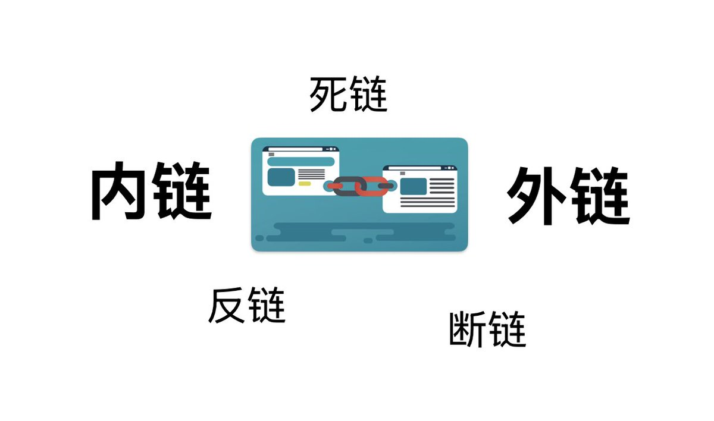
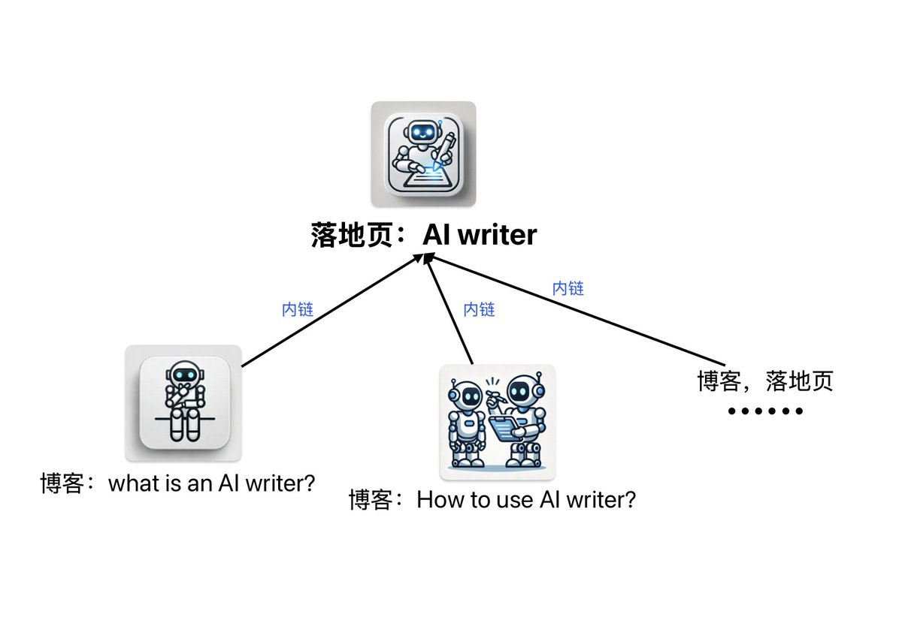
全文结构拆解
- 先把复杂链接概念收敛成内链和外链，降低理解成本。
- 内链适合把长尾页面获得的流量和权重传给主页面，但需要铺量，冷启动较慢。
- 外链尤其是高权重、强相关来源，可以快速提高站点信任和流量。
- 用 ChatGPT 给 AI writer 页面外链的极端例子说明：垂直相关与权重同时存在时效果最大。
评论与引用洞察
| 类型 | 链接 | 互动 | 内容要点 | 这一层的作用 | 可复用动作 |
|---|---|---|---|---|---|
| 引用 | 1863529073924030787 | likes 27 views 12138 |
用两个自有网站的 case 说明：高曝光网站给不垂直站导流，反而导致目标站排名和流量下降。 | 以反例证明外链不只看流量大小。 | PR/KOL 只找真正会使用图片/视频处理工具的人群。 |
关联内容
| 类型 | 链接 | 互动 | 内容要点 | 这一层的作用 | 可复用动作 |
|---|---|---|---|---|---|
| 关联内容 | 1861359494988759374 | likes 33 views 26209 |
提出轻量起量技巧：写竞品品牌词博客，抢一部分已有品牌搜索需求。 | 把 SEO 选词从通用词扩展到竞品词。 | 做
EzRemove vs X、best watermark remover alternatives，但必须诚实比较。 |
可复用原则
内链负责分配已有资产，外链负责引入外部信任；冷启动不能只靠其中一个。
映射到 EzRemove
- 内部建立工具矩阵链接：watermark-remover、video-watermark-remover、magic-eraser、photo-enhancer 互相传权。
- 外链目标优先图片编辑、视频剪辑、AI 工具目录、设计教程，而不是泛流量站。
- 做可被引用资产：watermark remover benchmark、before/after 示例库、版权安全指南。
SEO技巧分享第3篇-垂直外链与停留
- 来源：https://x.com/ZaneWynn_SEO/status/1863529073924030787
- 主题：SEO 第 3 篇：外链最重要的是垂直相关；不相关流量带来短停留，可能反向降权。
配图/媒体归档
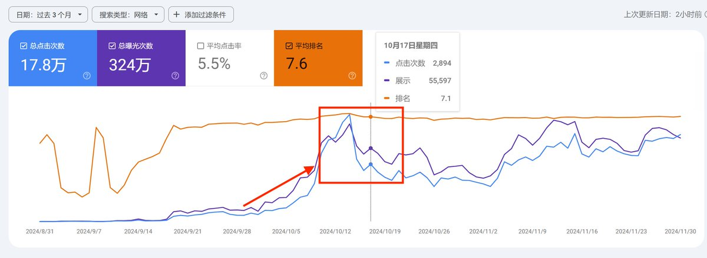
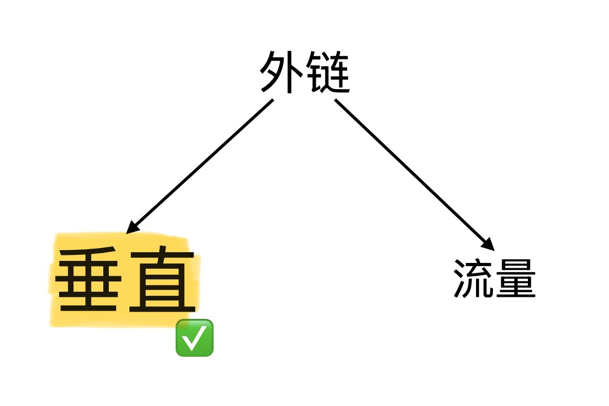
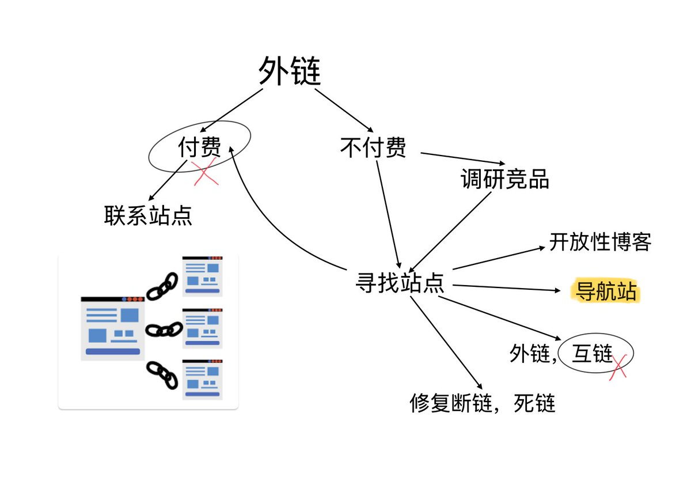
全文结构拆解
- 用真实 case 说明：一个高曝光站给另一个不垂直站导流，反而造成流量和排名下滑。
- 原因不是外链无效，而是用户画像错配，跳转后停留过短，质量信号变差。
- 把外链方法分为付费和非付费，同时提醒付费、互链、ABC 互链都有规则风险。
- 建议新手从垂直导航站、相关站点、断链修复、客座文章开始。
评论与引用洞察
| 类型 | 链接 | 互动 | 内容要点 | 这一层的作用 | 可复用动作 |
|---|---|---|---|---|---|
| 评论 | 1864489960562413651 | likes 0 views 104 |
读者追问评论区或低点击位置加外链是否有效。 | 把外链质量问题推到更细的执行层。 | 外链评估增加位置可见度、点击意图和页面上下文。 |
关联内容
| 类型 | 链接 | 互动 | 内容要点 | 这一层的作用 | 可复用动作 |
|---|---|---|---|---|---|
| 关联内容 | 1862088008939528665 | likes 60 views 27136 |
把复杂链接概念收敛到内链和外链：内链连站内，外链连外站，本质都是传流量和权重。 | 降低链接建设的理解门槛。 | 先让团队统一语言：哪些链接用于传权，哪些用于获客。 |
可复用原则
外链不是越大越好，而是越准越好；能带来垂直用户的链接才是资产。
映射到 EzRemove
- KOL/外链不要投泛娱乐流量，优先投设计、电商卖家、短视频剪辑、AI 图片工具用户。
- PR 文章要落在真实场景：去除自己素材水印、整理课程截图、处理商品图、视频剪辑提效。
- 用 UTM + GA4/GSC 观察每个外链来源的停留、上传、注册和付费，不只看点击量。
选择有上涨潜力的词
- 来源：https://x.com/ZaneWynn_SEO/status/1861705710545092642
- 主题：选上涨潜力词：新站非核心词优先低难度、过千搜索、趋势向上的词。
配图/媒体归档
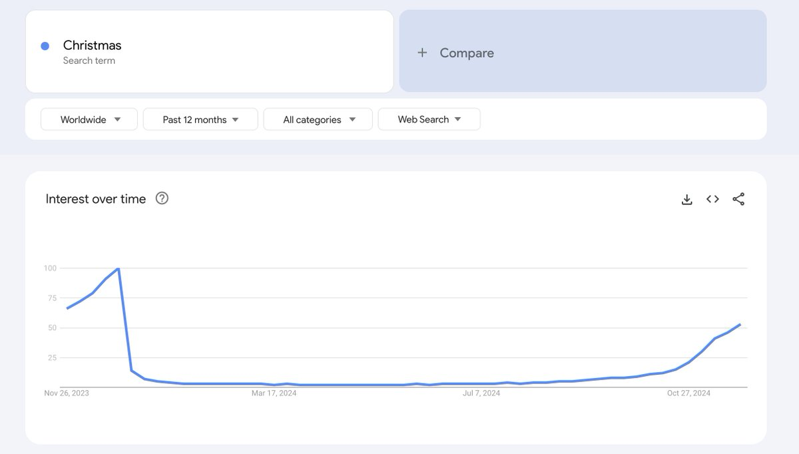
全文结构拆解
- 给出新站非核心关键词阈值：难度 20% 或以下，搜索量过千就值得测试。
- 提醒 Semrush 是第三方估算，要结合 Google Trends 观察流量起伏。
- 重点不是当前最大词，而是有上涨潜力、竞争还没完全拥挤的词。
评论与引用洞察
暂无。
可复用原则
趋势比静态搜索量更重要；早进上涨词，排名成本更低。
映射到 EzRemove
- 监控
AI watermark remover、remove AI watermark、remove text from AI image等新兴词。 - 每周拉 Google Trends + GSC impressions，把上升词快速扩成独立页面。
- 用低难度词验证内容模板，再复制到更大词组。
产品第一还是流量第一
- 来源：https://x.com/ZaneWynn_SEO/status/1859514896049897754
- 主题：产品第一还是流量第一：产品到行业平均后，运营和营销通常决定增长上限。
配图/媒体归档
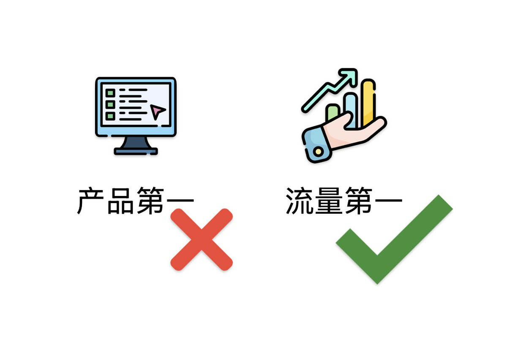
全文结构拆解
- 承认产品决定变现下限，但强调互联网产品如果没人看见，再好的体验也无法增长。
- 指出产品优化有边际递减：从 90 到 95 的成本和收益不一定匹配。
- 建议大多数情况下先有流量第一思维，但产品低于及格线时流量也没用。
评论与引用洞察
暂无。
关联内容
| 类型 | 链接 | 互动 | 内容要点 | 这一层的作用 | 可复用动作 |
|---|---|---|---|---|---|
| 关联内容 | 1858800931665797596 | likes 1 views 4875 |
关联回 SEO 第 0 篇中对产品/流量优先级的讨论。 | 把战略判断和选词动作连接起来。 | 页面优先级按流量机会和产品承接能力共同决定。 |
可复用原则
增长不是产品和流量二选一，而是先达到可转化产品底线，再把资源转向分发。
映射到 EzRemove
- 先确保上传、处理、下载、免费额度、注册流程不拖后腿，再加大 KOL/SEO。
- 不要把所有资源花在模型小幅提升；要同步建设内容、PR、渠道、外链和转化漏斗。
- 用“处理成功率、下载率、注册率、付费率”判断产品是否达到能承接流量的底线。
小红书冷启动-1
- 来源：https://x.com/ZaneWynn_SEO/status/1859535615131517384
- 主题：小红书冷启动 1：社媒推荐流不是搜索流，关键是首图、标题、停留与平台风格。
配图/媒体归档
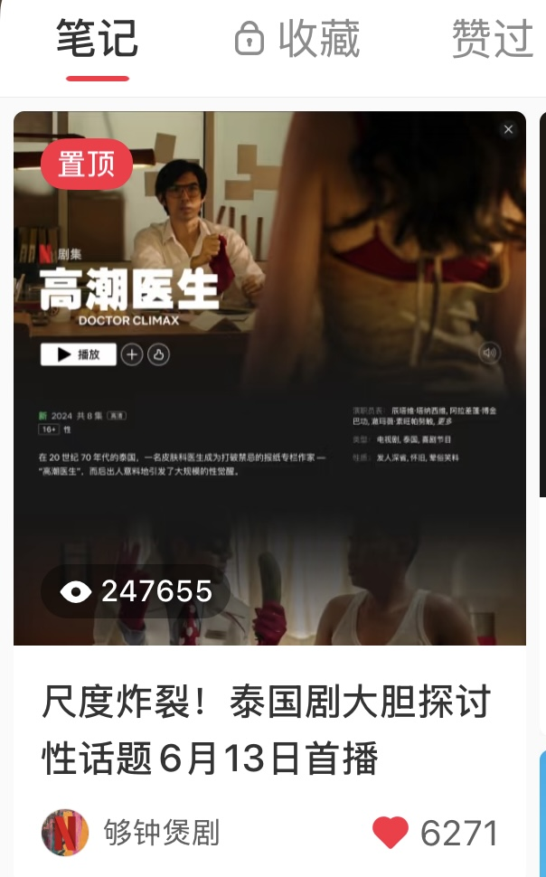
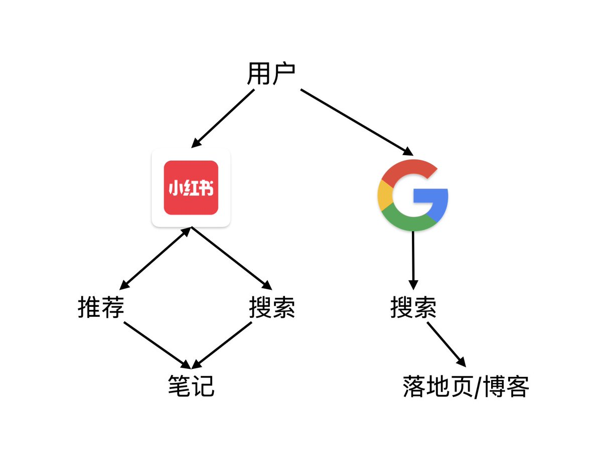
全文结构拆解
- 区分 Google 与小红书：Google 以搜索贯穿始终，小红书更多靠首页推荐分发。
- 小红书内容不先问关键词难度，而先问首图和标题能否让垂直用户点进去并看完。
- 被系统识别为优质笔记后才会持续推流，所以平台语感和内容包装比 SEO 选词更重要。
评论与引用洞察
| 类型 | 链接 | 互动 | 内容要点 | 这一层的作用 | 可复用动作 |
|---|---|---|---|---|---|
| 评论 | 1859758143770853816 | likes 2 views 491 |
读者验证：自己的小红书流量多数来自发现页，高流量内容都有平台风格文案图片。 | 外部案例支持作者判断。 | 把平台原生感作为 KOL 质量检查项。 |
| 评论 | 1860678864630092146 | likes 0 views 390 |
读者询问 SEO 是否属于运营岗位。 | 暴露新人对职能边界的困惑。 | 教程里补 SEO、内容、增长、运营的岗位关系。 |
| 引用 | 1859890665968251317 | likes 30 views 172505 |
小红书第 2 篇：Netflix 合租项目冷启动，不先写 SEO，而是判断社媒更适合。 | 用项目 case 说明渠道选择要看市场和用户认知。 | EzRemove 可先用社媒展示素材处理场景，再承接搜索。 |
可复用原则
不同平台对应不同分发机制；搜索承接需求，推荐制造需求。
映射到 EzRemove
- KOL 内容不能只套 SEO 标题，要做前后对比、效率提升、真实素材处理过程。
- 短视频/小红书脚本首屏展示“水印前后对比”，让用户先感知结果，再记住 EzRemove。
- 把社媒内容的目标设为创造需求和品牌记忆，落地页再承接搜索与转化。
小红书冷启动-2
- 来源：https://x.com/ZaneWynn_SEO/status/1859890665968251317
- 主题：小红书冷启动 2：用信息差和内容场景创造需求，冷启动后再做 SEO 更容易。
配图/媒体归档
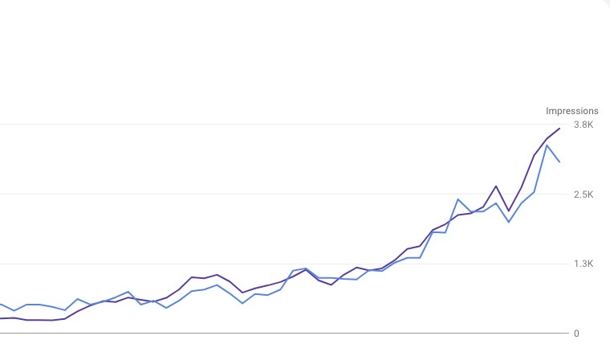
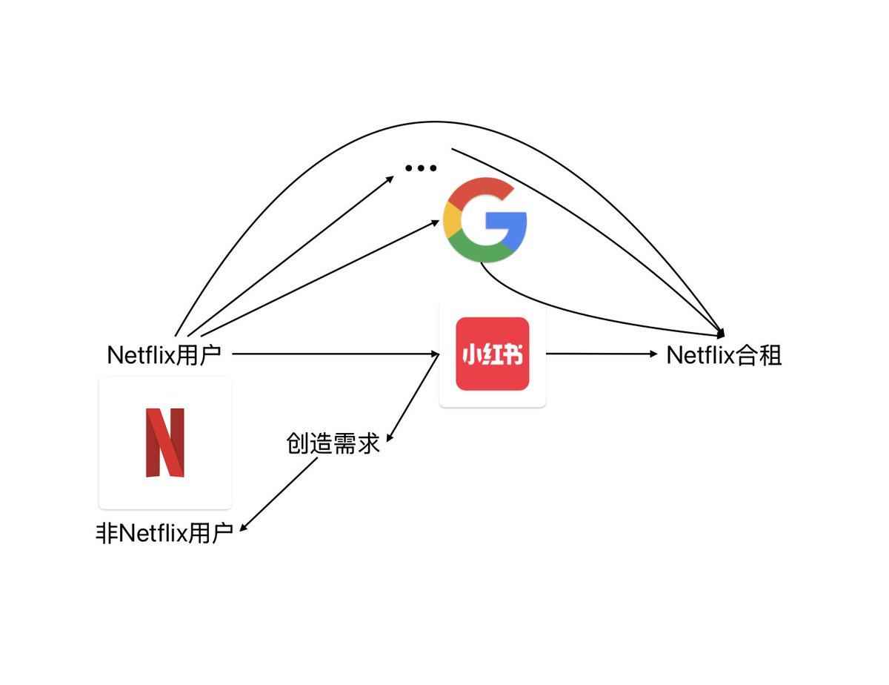
全文结构拆解
- Netflix 合租案例中，没有先写 SEO 博客，而是判断社媒冷启动更适合国内市场。
- 硬营销受平台风控和用户反感影响，所以用剧评内容把 Netflix 需求先创造出来。
- 核心动作是把用户不知道、没意识到的门槛信息展示出来，先产生兴趣，再承接产品。
评论与引用洞察
暂无。
关联内容
| 类型 | 链接 | 互动 | 内容要点 | 这一层的作用 | 可复用动作 |
|---|---|---|---|---|---|
| 关联内容 | 1859535615131517384 | likes 51 views 176912 |
小红书第 1 篇：提醒不要直接用 SEO 逻辑运营小红书，根因是算法类型不同。 | 先纠正跨平台方法误用。 | 社媒内容不要套 Google 标题，要适配推荐流。 |
可复用原则
当用户还没有明确搜索需求时，先用内容创造需求；当需求被教育后，SEO 承接会更轻松。
映射到 EzRemove
- 做“素材处理前后对比”“电商图快速清理”“视频剪辑素材复用”这类需求创造内容。
- 不要只说工具名；先展示具体痛点：水印遮挡、商品图不干净、视频素材无法复用。
- 社媒冷启动稳定后，把热门评论问题沉淀为 SEO FAQ 和教程页。
小红书中产人设
- 来源：https://x.com/ZaneWynn_SEO/status/1872582875465601044
- 主题：小红书人设：利用稀缺身份和生活方式想象，提升内容点击和关注。
配图/媒体归档
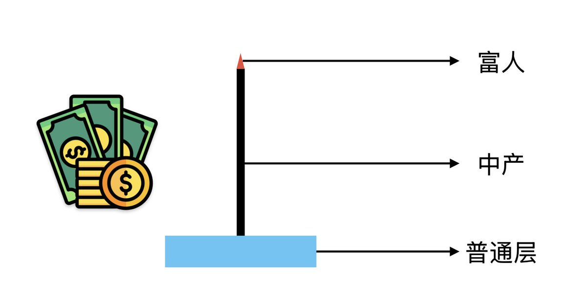
全文结构拆解
- 提出“中产人设”更容易涨粉，因为真实中产稀缺，用户对这种生活方式有想象。
- 强调社媒内容不只是信息，也是在售卖身份、审美、生活方式和心理投射。
- 计划用个人 IP 继续验证观点，说明这是可实验的运营假设。
评论与引用洞察
| 类型 | 链接 | 互动 | 内容要点 | 这一层的作用 | 可复用动作 |
|---|---|---|---|---|---|
| 评论 | 1874259808653820166 | likes 1 views 371 |
读者反驳：这种人设可能让用户误判社会现实。 | 提示人设营销的副作用。 | 品牌内容要做身份吸引，但不要制造过度焦虑或虚假优越。 |
可复用原则
社媒增长常常来自身份投射；用户关注的不只是功能，还有自己想成为谁。
映射到 EzRemove
- EzRemove 的 KOL 不只找工具测评号，也可找设计师、电商卖家、剪辑师这类身份型账号。
- 内容角度从“去水印工具”升级成“高效素材工作流”“专业创作者工具箱”。
- 品牌视觉和落地页案例要让用户觉得这是专业创作者使用的工具，而不是廉价小工具。
闲鱼选词方法
- 来源：https://x.com/ZaneWynn_SEO/status/1862435142884901125
- 主题：闲鱼选词/选品：没有直接数据时，用相邻平台关键词和头部卖家销量做代理判断。
配图/媒体归档
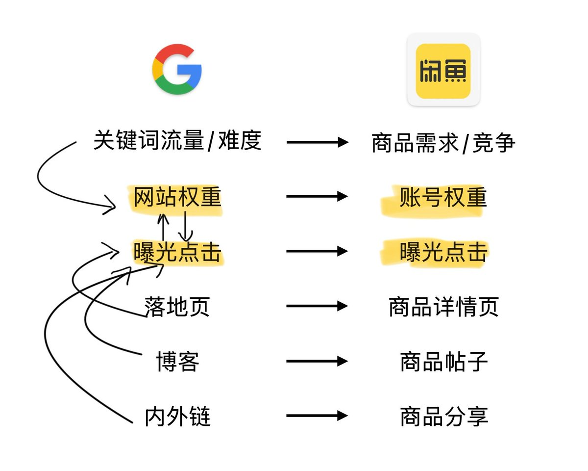
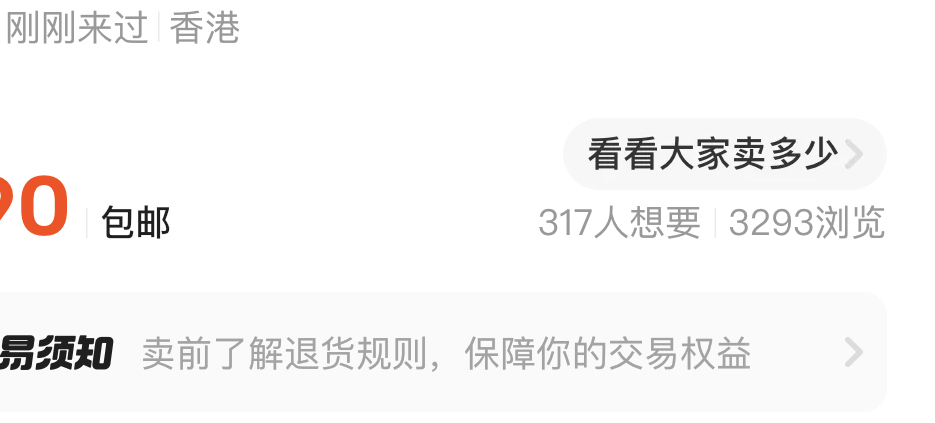
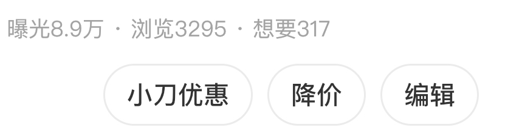
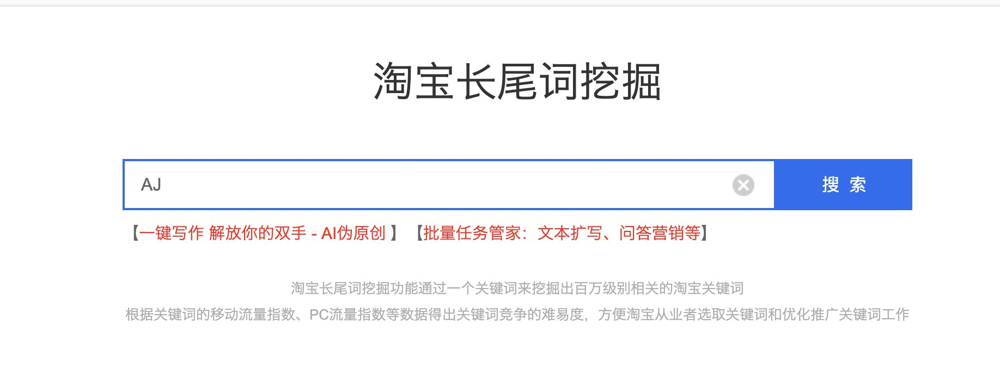
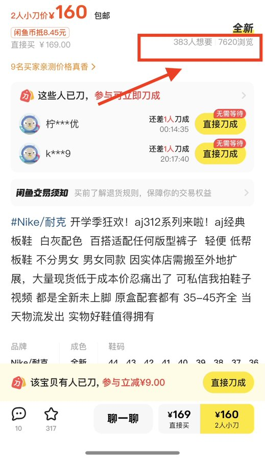
全文结构拆解
- 承认没有直接查闲鱼关键词和流量的平台，于是用淘宝关键词做初筛。
- 再回到闲鱼搜索结果，观察头部卖家的销量来判断真实需求和竞争格局。
- 提出生意不可能三角：利润高、竞争小、门槛低不可能同时满足。
- 把选品逻辑和 SEO 选词打通：尽量找利润高/需求强、竞争相对低的机会。
评论与引用洞察
| 类型 | 链接 | 互动 | 内容要点 | 这一层的作用 | 可复用动作 |
|---|---|---|---|---|---|
| 评论 | 1862498562543952342 | likes 0 views 881 |
读者表示意犹未尽，希望更详细。 | 验证闲鱼/代理数据方法有进一步拆解需求。 | 补一篇“没有关键词工具时如何做代理调研”的教程。 |
关联内容
| 类型 | 链接 | 互动 | 内容要点 | 这一层的作用 | 可复用动作 |
|---|---|---|---|---|---|
| 关联内容 | 1856971285794099659 | likes 1387 views 555541 |
关联到闲鱼运营旧帖：用基础 SEO/产品运营思维做闲鱼有降维优势。 | 补足作者在闲鱼场景的长期经验。 | 把 SEO 方法迁移到站外平台：标题、需求、转化、复购。 |
可复用原则
没有完美数据时，用代理数据交叉验证；关键是判断需求、竞争和利润结构。
映射到 EzRemove
- 没有完整关键词数据时，用 Semrush、GSC、Google Suggest、竞品页面、社媒评论交叉判断。
- 把关键词也当选品：搜索量是需求，KD/SERP 是竞争，CPC/转化是利润信号。
- 优先做“需求明确、竞争可打、能转化”的页面，而不是只追最大词。
历史已归档图片补充
以下图片是历史抓取时已经归档到仓库的 X 媒体文件；本轮 X payload 没有重新返回对应媒体对象，但文件仍保留并展示，避免遗漏已保存素材。
图片：历史归档图片 1866780845656473877_1866773625136877569.jpg
{kind=link}
- 关联 tweet id：1866780845656473877；本地文件：
assets/x-media/1866780845656473877_1866773625136877569.jpg
图片：历史归档图片 1866780845656473877_1866773630514081792.jpg
{kind=link}
- 关联 tweet id：1866780845656473877；本地文件：
assets/x-media/1866780845656473877_1866773630514081792.jpg
对 EzRemove 的总执行方案
1. 页面结构
- 核心页：
/watermark-remover/承接watermark remover / watermark remove / remove watermark。 - 视频页：
/video-watermark-remover/承接视频场景与短视频剪辑 KOL 流量。 - 长尾页：
remove watermark from image、remove watermark from video、remove logo from photo、remove text from image、remove date stamp、remove TikTok watermark。 - 对比页：
EzRemove vs Media.io、EzRemove vs Pixelbin、best watermark remover alternatives。 - GEO
页：
What is EzRemove?、How EzRemove works、EzRemove FAQ、Is it legal to remove watermarks?。
2. 内容生产
- 每篇文章必须服务一个明确页面角色：拉新、比较、解释、转化或传权。
- 长尾文章首屏放上传入口或前后对比，不要让用户看完长文才知道工具在哪。
- 评论区出现的问题直接转 FAQ：工具怎么做图、权重怎么传、怎么冷启动、外链有没有流量也有效吗、商业模式是什么。
3. KOL/PR
- 用真实 KOL 曝光和免费工具体验制造品牌搜索，不做机器人搜索、虚假点击、账号矩阵规避。
- KOL 垂类优先：电商卖家、设计师、短视频剪辑、AI 工具测评、学生/职场效率。
- 内容角度优先前后对比、工作流节省时间、素材处理成本下降，而不是只喊“去水印”。
4. 外链
- 优先垂直站：AI 图片工具目录、视频剪辑教程、设计资源站、电商卖家资源、创作者工具合集。
- 每条外链都用 UTM 看停留、上传、注册，不只看点击。
- 不买泛站群链接；不相关大流量可能带来短停留，反而伤害站点质量信号。
5. 30/60/90 天
- 30 天：完成核心页和 10 篇长尾/FAQ；投 20 个小 KOL；建立 GSC/GA4/UTM 周报。
- 60 天：扩展 40-60 篇内容；做 5 个竞品对比页；拿 20 条垂直外链；沉淀评论问题库。
- 90 天：做多语言页面和 GEO 页面；筛出稳定 KOL 渠道；把有效长尾升级成功能落地页。
验收标准
- 页面打开后直接看到完整拆解，不再只是 Markdown 链接。
- 每篇来源保留原文材料、评论/引用洞察、可复用原则和 EzRemove 映射；删除抓取过程表和楼层流水账。
- GitHub Pages、GitHub 仓库、飞书文档三处一致。
- 网页保留必要原文材料、图片和结构化拆解，重点服务团队复盘和执行。
人生观：新增原文材料与可复用增长拆解
图片/媒体链接
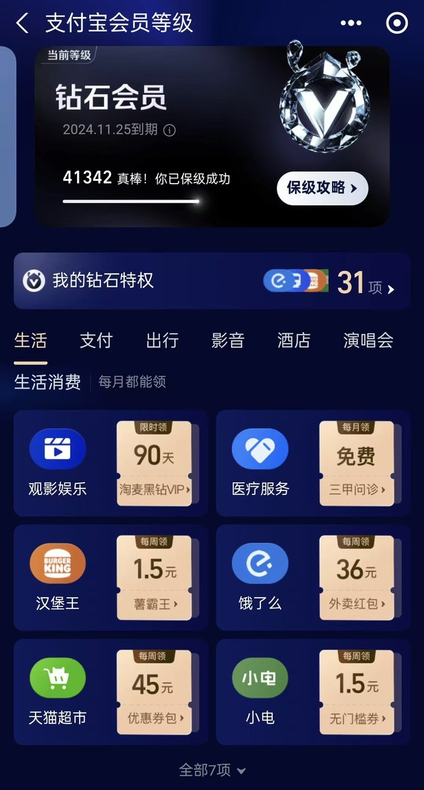
可复用增长拆解
- 用具体误区开场，比直接讲概念更容易让用户进入讨论。
- 先定义核心概念，再展开案例，能减少读者误解。
- 争议案例必须同时写收益和风险，不要只提技巧。
- 对 EzRemove / watermark remove 增长内容来说，可以复用“认知差 + 风险边界 + 工具效率”的结构，但要避免鼓励侵权或灰色操作。